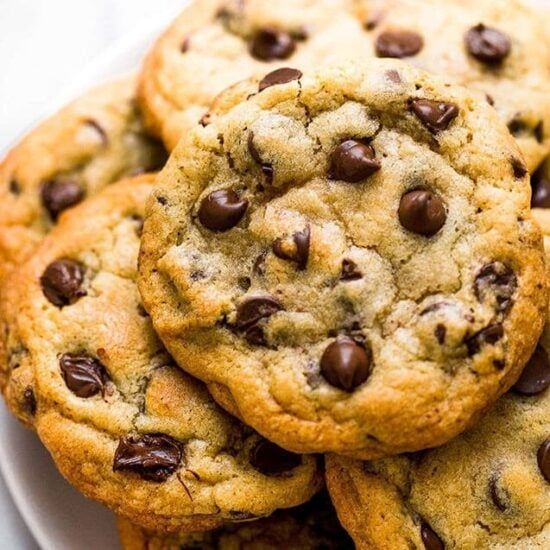

Double Chocolate Chip Cookies

Ingredients:
- 1 cup of softened Margarine
- 1 cup of white sugar
- 1 cup of brown sugar
- 2 eggs
- 1 teaspoon of vanilla oil
- 2 cups of universal flour
- 1 teaspoon of baking soda
- 1 teaspoon of salt
- 1/3 of a cup of no-sweetened cocoa powder
- 3 cups of semi-sweet pieces of chocolate
Method
- Preheat the oven to 190°C, and grease the cookie tray.
- In a medium bowl, grate the margarine, white sugar and brown sugar until smooth. Beat one egg at a time, then mix with vanilla. Sift flour, baking soda, salt and cocoa powder; Mix well. Stir in the chocolate chips. With a spoonful of dough, form balls and place them at intervals of one inch on the prepared sheets.
- Bake for 8 to 10 minutes in a preheated oven. Let the cookies cool on a baking sheet for 2 minutes before removing them and placing them on a metal grid to cool completely.